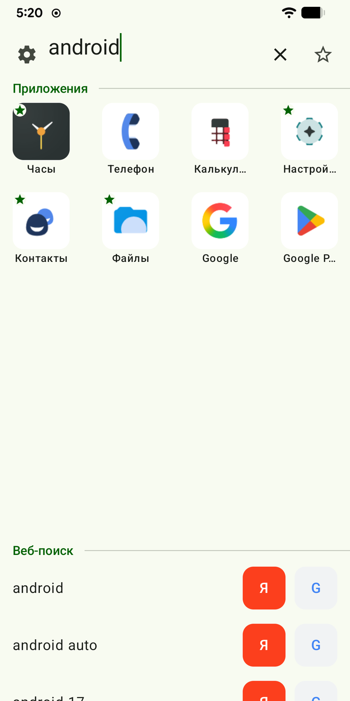
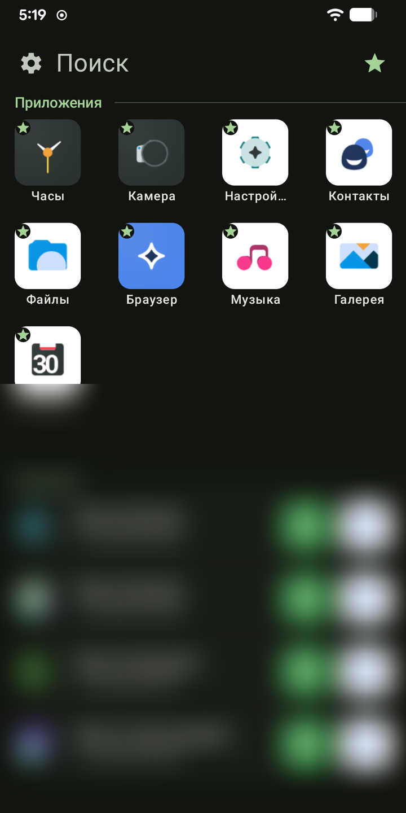
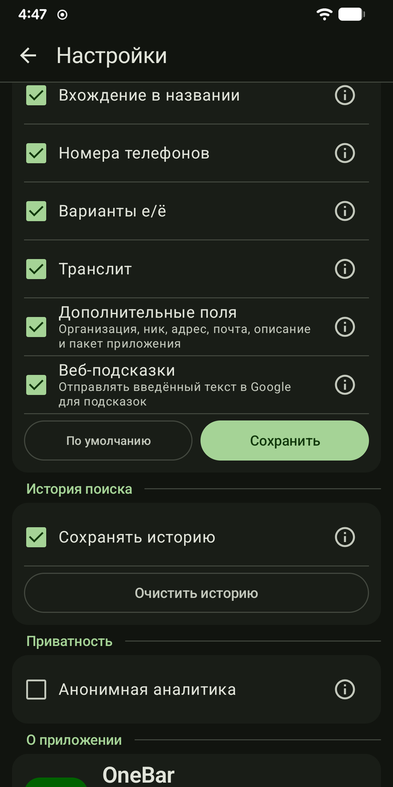

Приложения и контакты
Ищите по названию, номеру, организации и дополнительным полям. Контакты остаются на устройстве, а звонок или СМС открываются в выбранном системой приложении.
OneBar собирает установленные приложения, контакты и веб-подсказки в одну строку. Без лишних экранов, рекламы и передачи ваших данных рекламным сетям.
Алексей
Рабочий
Марина
Мобильный
Меньше переключений
OneBar не заменяет ваш лаунчер и не пытается стать ещё одним комбайном. Это отдельный быстрый поиск для повседневных действий.
Ищите по названию, номеру, организации и дополнительным полям. Контакты остаются на устройстве, а звонок или СМС открываются в выбранном системой приложении.
История показывает недавно использованное, избранное поднимается по частоте, а остальные результаты сортируются по релевантности. Дубли не мешают.
СМС и звонок, Яндекс и Google — нужное действие раскрывается прямо в строке. Полный свайп запускает его, короткий возвращает карточку назад.
Интерактивное демо
Посмотрите, как один запрос собирает разные типы результатов. Демо работает на вымышленных данных и ничего не отправляет.
Подсказки: запросы не сохраняются. При включённой веб-аналитике передаётся только количество результатов.
Марина
Мобильный
Алексей
Рабочий
0
READ_CALL_LOG
и READ_SMS
1
переключатель
аналитики
MIT
открытая
лицензия
Приватность по умолчанию
OneBar не читает журнал звонков и SMS. Контакты, история и избранное хранятся локально. Для работы веб-подсказок нужен интернет, но текст запроса не добавляется в локальную историю без явного поиска.
Основные экраны
Светлая и тёмная темы, крупные иконки и понятные действия. Скриншоты сделаны на реальном устройстве.



Небольшой честный проект
OneBar создаётся как личный Android-проект: чтобы попробовать Compose, поиск, локальные хранилища и продуманный Android UX. Никаких планов продавать приложение или показывать рекламу.
Kotlin
Jetpack Compose
Local
Данные на устройстве
FOSS
Исходники и MIT
0 ₽
Всегда бесплатно
Установка без Google Play
Подписанные APK и контрольные суммы публикуются в GitHub Releases. Там же находятся описание изменений и ссылка на исходный код.
Выберите последний релиз и файл OneBar-*.apk. Не устанавливайте сборки из сторонних зеркал.
В релизе есть файл SHA256SUMS. Команды проверки есть в инструкции.
Android может попросить разрешение для вашего браузера или файлового менеджера. Это нормально для sideload.
Если обновляете приложение, сохраняйте тот же ключ подписи. Перед сменой канала установки сделайте резервную копию данных.
Развитие
Планы не обещания и могут меняться.
FAQ
Не нашли ответ? Создайте issue на GitHub — для этого и нужен открытый проект.
Задать вопросПроект некоммерческий и учебный. Для первой публикации выбраны GitHub Releases и свободные Android-каталоги: это проще, дешевле и лучше соответствует идее открытого исходного кода. Google Play не исключён навсегда, но сейчас не планируется.
Нет. OneBar не запрашивает READ_SMS и READ_CALL_LOG. В истории коммуникаций появляются только действия, которые вы сами открыли через OneBar: например, экран набора номера или новый SMS.
Только если вы включили её в настройках. AppMetrica получает технические сведения об устройстве, сессии и обезличенные события вроде «открыто приложение» или «выполнен поиск». Тексты запросов, имена, номера и содержимое сообщений не отправляются. События можно посмотреть в документации для разработчика.
Да. Установленные приложения, контакты, история и избранное доступны локально. Веб-подсказки требуют подключения к сети. Сам поиск по контактам и приложениям не зависит от Google Play Services.
Скачайте новый APK из GitHub Releases и установите поверх предыдущего. Если APK подписан тем же ключом, данные сохранятся. После появления во F-Droid или IzzyOnDroid обновления можно будет получать через выбранный каталог.
Конечно. Сообщайте об ошибках, предлагайте улучшения и отправляйте pull request. Перед большой правкой лучше обсудить её в issue, чтобы не делать работу впустую.